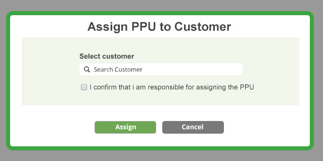

Try to avoid popups where ever possible.
Try and make popups moveable.
Grey out the rest of the screen behind.
The popup is contained in a 10 pixel wide green border

The primary action should be green and to the left of the form, A secondary action (non positive) should be dark grey.